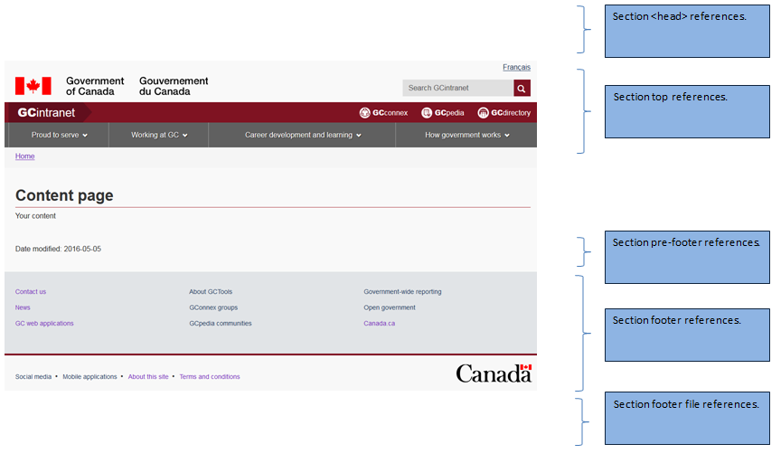

Intranet
Slogan
Note
Mise en oeuvre de la SGDC
Modèle de page défaut
Page d'entrée
Menu de la section
Gabarits d’application
Mise en oeuvre du thème GCintranet à l’aide de la SGDC
Bienvenue au guide de mise en oeuvre du thème GCintranet (intranet.canada.ca). Vous trouverez plus bas des directives sur comment mettre en oeuvre le thème GCintranet à l’aide de la SGDC. Vous trouverez également différents scénarios possibles selon les exigences que vous rencontrerez. SVP lire les sections suivantes attentivement avant de débuter.
Si vous prévoyez développer votre actif Web en .NET ou JAVA, vous pouvez suivre ce guide (en anglais seulement). Le plus gros de la mise en oeuvre des gabarits a déjà été fait.
Contrôle de versions ou « run »
À plusieurs endroits dans ce guide, vous aurez deux options : avec contrôle de versions ou « run ».
- Le contrôle de version signifie que vous ne recevrez PAS de mise à jour automatique de la BOEW. Vous mettrez en place une « version » dans votre actif Web et ajouterez un mécanisme pour la garder à jour pendant que vous faites vos essais pour chaque nouvelle version de la BOEW. Nous suggérons que vous utilisiez votre fichier web.config pour stocker votre variable de version. À EDSC, mettre à jour le fichier web.config en production est beaucoup plus simple que de faire une relâche complète. Cela permet aux actifs Web de demeurer à jour plus rapidement en relâchant seulement le fichier web.config lorsque l’actif Web a été testé et qu’il fonctionne avec la nouvelle version de la BOEW. Des exemples sont fournis pour nos gabarits .NET et JAVA (en anglais seulement).
- En « run », vous recevrez automatiquement tous les nouveaux lancements de la BOEW sans aucune intervention de votre part.
Veuillez noter que peu importe votre choix, vous recevrez TOUJOURS des mises à jour du thème GCintranet en lien avec le mega menu et/ou les activités et initiatives du GdC. Tout changement à l’en-tête ou au pied de page sera automatiquement mis à jour pour votre actif Web. Vous devez avoir mis en place la plus récente version ou la version antérieure pour obtenir ces changements.
Gabarits d’applications
Aurez-vous besoin d’un en-tête ou d’un pied de page personnalisé? Veuillez prendre note que ceci est différent de l’ajout ou du retrait de certains éléments qui sont permis selon les Spécifications du contenu et de l’architecture de l’information pour Canada.ca. Les éléments qui figurent dans ce document ne nécessitent pas un en-tête ou un pied de page personnalisé et sont présents par défaut dans la version de base de la SGDC. Il n’est pas conseillé d’utiliser un en-tête ou un pied de page personnalisé à moins de recevoir l’autorisation de votre département, du SCT ou de l’Éditeur principal. Si vous êtes autorisés, suivez les directives suivantes [link].
Que permettra de gérer la SGDC et comment cela affectera-t-il mon actif Web?
La SGDC a pour but de gérer la couche de présentation de votre actif Web de façon centralisée. Ne vous inquiétez pas, la SGDC vous permet de la personnaliser selon les Spécifications du contenu et de l’architecture de l’information pour Canada.ca. Par exemple, vous pouvez toujours contrôler le lien pour changer de langue, le champ de recherche ou encore retirer les activités et initiatives à l’aide de variables de la SGDC. Celles-ci sont expliquées dans chacune des sections qui suivent. La SGDC gèrera :
- GCIntranet / BOEW (fichiers CSS, JS et autres)
- Le favicon de GCintranet
- En-tête GCintranet(menu, images, liens, champ de recherche, etc.)
- Espace de pré-contenu (pour les annonces à l’échelle du gouvernement)
- Espace de post-contenu (pour les annonces à l’échelle du gouvernement)
- Activités et initiatives du gouvernement du Canada
- Pied de page GCintranet (menu, liens, images, etc.)
Information à propos du contrôle de versions
Si vous décidez de mettre en oeuvre un contrôle de versions, veuillez noter que vous devez également mettre en place un mécanisme vous permettant de mettre à jour les numéros de versions à l’aide d’un fichier web.config ou d’une base de données. Des exemples sont fournis pour les gabarits .NET et JAVA. Nous vous conseillons aussi de garder le numéro de la version en tant que variable différente de l’URL de la SGDC au cas où il y aurait des modifications dans le futur. Voici quelques raisons d’utiliser le contrôle de versions :
- Il permet de déployer les derniers fichiers sans impact sur l'application et / ou sur les fichiers qu'elle utilise.
- Il permet à l'application de sélectionner la version des fichiers sous le dossier parent pour le thème qui a été testé et qui n’affecte pas l’application.
Comme vous le verrez plus loin dans ce guide, les différentes sections (ou gabarits) de votre page contiennent un chemin vers les fichiers de la SGDC et le thème que vous avez choisi. Garder ces chemins et URL dans votre fichier de configuration vous permettra d’utiliser la version de la SGDC que vous aurez testée et approuvée. Voici un exemple d’URL à utiliser dans votre application :
- [URL de la SGDC]/[thème]/[version de la BOEW]/[nom du fichier-[langage].extension]
Présentement, pour la version 4.0.30 en français avec le thème GCintranet, le URL est :
Le « URL de la SGDC », le « thème », la « version de la BOEW » et le « langage » doivent être les options de configuration dans votre actif Web. Tel que préalablement suggéré, utilisez un fichier web.config, XML config ou une base de données pour stocker ces variables. Assurez-vous que votre site Web utilise votre nouveau chemin de fichier configurable.
NOTE IMPORTANTE #1: Lorsque vous mettez à jour votre actif Web à une version supérieure, nous vous suggérons d’aussi mettre à jour vos fichiers statiques de repli. Sinon, assurez-vous que vos fichiers statiques de repli puissent être mis à jour indépendamment de votre version WET de la SGDC. Avoir la SGDC à la version 4.0.30 et les fichiers statiques de repli à la version 4.0.29 est accepté, quoiqu’il est recommandé d’avoir les deux à jour. Vos fichiers statiques de repli peuvent être une version ou deux en retard jusqu’à temps que vous effectuez une relâche complète. Nous vous informerons si vos fichiers doivent être mis à jour. Ce sera indiqué dans le courriel qui annonce une nouvelle version.
NOTE IMPORTANTE #2: La SGDC ne garde à jour que la plus récente version ainsi que les deux versions antérieures. Si vous utilisez une version antérieure, vous ne recevrez pas de mises à jour. L’objectif de la SGDC est de demeurer à jour facilement alors suivez les directives de ce guide attentivement. Si vous êtes en retard, vous négligez l’avantage principal de la SGDC.
Directives sur la mise en oeuvre de la SGDC
Modèle de page de la SGDC
Dans la section qui suit, vous trouverez le modèle de base sur lequel s’appuiera votre bien Web. La page est constituée de cinq sections et quatre d’entre elles utiliseront des fichiers statiques de repli au cas où JavaScript serait désactivé. Lorsque JavaScript se charge, les GCT remplaceront les fichiers statiques de repli. Voici les sections de votre page :
- Références de fichier de la section
<head> - Section supérieure de votre page
- Section qui précède le pied de page
- Section du pied de page
- Références de fichier de pied de page
Tous les fichiers statiques de repli se retrouvent sur notre page GCpedia. À chaque fois que vous devez ouvrir votre bien Web pour effectuer des modifications ou que vous devez passer par un processus de relâche, vous devez toujours utiliser les fichiers statiques de repli les plus récents. Ces fichiers permettent l’affichage de base dans la mesure où un utilisateur aurait désactivé le Javascript sur son fureteur.
Pour tous les gabarits et sections, la variable JavaScript suivante est obligatoire :
- OBLIGATOIRE - cdnEnv – Utilisez cette variable selon l’environnement que vous utilisez.
"cdnEnv": "prod"
Les employés d'EDSC peuvent nous contacter pour obtenir d'autres variables pouvant être utilisées à l'interne.
Pour toutes les captures d'écran suivantes, veuillez insérer dans votre propre code :
- (version) – La version que vous utiliserez (par exemple v4_0_30) ou "rn" pour le contrôle de versions
- (language) – La langue que vous utiliserez (dans laquelle l'utilisateur navigue) (en ou fr)
- Ajoutez / éditez / mettez à jour les réfrérences aux variables JavaScript
Exemple de sous-thème
La capture d'écran suivante est la page d'accueil d'EDSC utilisant la SGDC. La variable subTheme vous permet d'avoir un aspect personnalisé tout en ayant les avantages de la SGDC et de la BOEW. Si vous désirez utiliser la SGDC mais également obtenir un aspect personnalisé, veuillez nous contacter.
Références de fichier de la section <head>
Dans la section <head> de votre page, vous devrez apporter trois changements.
- Le premier changement consistera à inclure les deux références des nouveaux fichiers GCT qui exécuteront toutes les tâches.
- Le deuxième changement consistera à créer la section
<noscript>, ce qui permettra à votre page d’avoir la présentation voulue si JavaScript est désactivé. Vous devrez charger un fichier statique de repli dans la section<noscript>. - Le troisième changement consistera à ajouter le code GCT pour exécuter l’écriture du modèle dans la section
<head>. Les variables JavaScript qui suivent peuvent être utilisées dans cette section :
- FACULTATIF - cdnEnv – Utilisez cette variable selon l’environnement que vous utilisez.
"cdnEnv": "prod"
- Plus nécessaire à partir de 4.0.31 - FACULTATIF - jqueryEnv – Utilisez cette variable pour spécifier à partir de quel environnement vous voulez récupérer les fichiers jQuery. Par défaut, ils sont chargés localement de la BOEW. Sinon, utilisez ce qui suit pour charger à partir de Google CDN :
"jqueryEnv": "external"
- FACULTATIF - subTheme – Utilisez cette variable pour afficher un aspect personnalisé pour votre actif Web intranet. Vous devez nous contacter pour obtenir cette option.
"subTheme": "esdc"
Exemple :
<!-- Load closure template scripts -->
<script src="https://ssl-templates.services.gc.ca/app/cls/WET/gcintranet/v4_0_29/cdts/compiled/soyutils.js"></script>
<script src="https://ssl-templates.services.gc.ca/app/cls/WET/gcintranet/v4_0_29/cdts/compiled/wet-en.js"></script>
<noscript>
<!-- Write closure fall-back static file -->
<!-- /ROOT/app/cls/WET/gcintranet/v4_0_29/cdts/static/refTop.html -->
<!--#include virtual="/app/cls/WET/gcintranet/v4_0_29/cdts/static/refTop.html" -->
</noscript>
<!-- Write closure template -->
<script>
document.write(wet.builder.refTop({
}));
</script>
REMARQUE : N’oubliez pas de toujours indiquer dans la section <noscript> le fichier statique de repli, faute de quoi votre page ne s’adaptera pas sans heurt lorsque JavaScript est désactivé.
Références de fichier de la section supérieure
Dans la section supérieure de votre page, vous devrez apporter trois changements.
- Le premier changement consistera à ajouter une nouvelle balise
<div>avec ID « def-top » pour encapsuler l’ensemble du contenu dans la section supérieure. Cette balise<div>commencera dans le haut de votre page et se rendra jusqu’à l’élément<main>d’ouverture. - Le deuxième changement consistera à inclure la référence du fichier statique de repli dans la nouvelle balise
<div>que vous avez créée. - Le troisième changement consistera à ajouter le code GCT pour exécuter l’écriture du modèle dans la section supérieure afin de remplacer le nouveau contenu
<div>une fois que le modèle sera prêt. Les variables JavaScript qui suivent peuvent être utilisées dans cette section :
- FACULTATIF - lngLinks – Utilisez cette variable pour préciser l’emplacement du lien permettant de passer d’une langue à l’autre. Bien que ce soit facultatif, il est normalement obligatoire de fournir un lien pour changer la langue.
"lngLinks": [{ "lang": "en", "href": "content-en.html", "text": "English" }] - FACULTATIF – breadcrumbs – Utilisez cette variable pour préciser le fil d’Ariane de votre page. Il convient de noter que si aucun fil d’Ariane n’est précisé, le modèle insérera un lien vers la page d’accueil du site Web Canada.ca.
"breadcrumbs": [{ "title": "Page d’accueil", "href": "https://www.canada.ca/fr/index.html" },{ "title": "SGDC", "acronym": "Solution de gabarits à déploiement centralisé", "href": "https://www.canada.ca/fr/index.html" }] - FACULTATIF – showPreContent – L’Éditeur principal utilisera cette variable pour insérer du contenu dans l’espace qui précède le contenu de votre page. Ce contenu figure TOUJOURS par défaut sur toutes les pages. Vous devrez obtenir l’autorisation de l’Éditeur principal pour ne pas inclure ce contenu dans votre bien Web. Si vous obtenez cette autorisation, vous pouvez insérer le code qui suit.
"showPreContent": false
- FACULTATIF – search – Ce contenu figure TOUJOURS par défaut sur toutes les pages. Vous devrez obtenir l’autorisation de l’Éditeur principal pour ne pas inclure ce contenu dans votre bien Web. Si vous obtenez cette autorisation, vous pouvez insérer le code qui suit.
"search": false
- FACULTATIF – siteMenu – Utilisez cette variable pour afficher un menu personnalisé. Vous devez nous contacter pour obtenir cette option.
"siteMenu": true
- FACULTATIF - subTheme – Utilisez cette variable pour afficher un thème personnalisé pour votre bien Web intranet. Vous devez nous contacter pour obtenir cette option.
"subTheme": "esdc"
- FACULTATIF – intranetTitle – Utilisez cette variable pour afficher un titre intranet personnalisé. Avant de procéder, veuillez vous assurer d'avoir l'autorisation de votre ministère, du SCT ou de l'Éditeur principal. Cette variable n'est pas conforme aux Spécifications du contenu et de l’architecture de l’information pour Canada.ca.
"intranetTitle": [{ "href": "http://esdc.prv/en/index.shtml", "text": " IntraWeb", "boldText" : "ESDC/SC", "acronym": "Employment and Social Development Canada / Service Canada" }] - FACULTATIF - GCToolsModal - Cette variable est utilisée pour rendre les liens GC Tools dans l'en-tête en une boîte de dialogue modale. La valeur par défaut est définie à false.
"GCToolsModal": true
Exemple :
<div id="def-top">
<!-- Write closure fall-back static file -->
<!-- /ROOT/app/cls/WET/gcintranet/v4_0_29/cdts/static/top-en.html -->
<!--#include virtual="/app/cls/WET/gcintranet/v4_0_29/cdts/static/top-en.html" -->
</div>
<!-- Write closure template -->
<script>
var defTop = document.getElementById("def-top");
defTop.outerHTML = wet.builder.top({
"lngLinks": [{
"lang": "fr",
"href": "content-fr.shtml",
"text": "Français"
}]
});
</script>
REMARQUE : N’oubliez pas que la balise <div> qui encapsule votre fichier statique de repli s’appelle « def-top», faute de quoi votre page ne s’affichera pas correctement.
Références de fichiers de la section qui précède le pied de page
Dans la section qui précède le pied de page de votre page, vous devrez apporter trois changements.
- Le premier changement consistera à ajouter une nouvelle balise
<div>avec ID « dev-prefooter » pour encapsuler l’ensemble du contenu qui précède le pied de page. Cette balise<div>commencera directement sous le dernier élément de votre contenu. Il est important que vous NE fermiez PAS votre élément</main>tout de suite! - Le deuxième changement consistera à inclure la référence du fichier statique de repli dans la nouvelle balise
<div>que vous avez créée. - Le troisième changement consistera à ajouter le code GCT pour exécuter l’écriture du modèle dans la section qui précède le pied de page afin de remplacer le nouveau contenu
<div>une fois que le modèle sera prêt. Les variables JavaScript qui suivent peuvent être utilisées dans cette section :
- FACULTATIF – showPostContent – L’Éditeur principal utilisera cette variable pour insérer du contenu dans l’espace qui suit le contenu de votre page. Ce contenu figure TOUJOURS par défaut sur toutes les pages. Vous devrez obtenir l’autorisation de l’Éditeur principal pour ne pas inclure ce contenu dans votre bien Web. Si vous obtenez cette autorisation, vous pouvez insérer le code qui suit.
"showPostContent": false
- FACULTATIF – screenIdentifier – Utilisez cette variable pour spécifier l’identificateur d’écran de votre application Web.
"screenIdentifier": "0123456789"
- FACULTATIF – dateModified – Utilisez cette variable pour préciser la date de modification de votre page. Si vous préférez utiliser la méthode d’indicateur de version, utilisez la variable suivante. Prenez note que vous devez utiliser une méthode ou l’autre.
"dateModified": "2017-04-25"
- FACULTATIF – verisonIdentifier – Utilisez cette variable au lieu de dateModified pour spécifier la version de l’application Web.
"versionIdentifier": "0123456789"
- FACULTATIF - pagedetails - Utilisez cette variable pour retirer la balise
<div class="pagedetails">lorsque vous utilisez le gabarit de message d'erreur."pagedetails": false
Exemple :
<div id="def-preFooter">
<!-- Write closure fall-back static file -->
<!-- /ROOT/app/cls/WET/gcintranet/v4_0_29/cdts/static/preFooter-en.html -->
<!--#include virtual="/app/cls/WET/gcintranet/v4_0_29/cdts/static/preFooter-en.html" -->
</div>
<!-- Write closure template -->
<script>
var defPreFooter = document.getElementById("def-preFooter");
defPreFooter.outerHTML = wet.builder.preFooter({
"dateModified": "2016-05-05"
});
</script>
REMARQUE : N’oubliez pas que la balise <div> qui encapsule votre fichier statique de repli s’appelle « def-preFooter », faute de quoi votre page ne s’affichera pas correctement. De même, il est important que vous fermiez l’élément <main> après la section qui précède le pied de page tel qu’il est illustré dans l’exemple de code ci dessus.
Références de fichier de la section du pied de page
Dans la section du pied de page, vous devrez apporter trois changements.
- Le premier changement consistera à ajouter une nouvelle balise
<div>avec ID « def-footer » pour encapsuler l’ensemble du contenu du pied de page. Cette balise<div>commencera immédiatement après l’élément</main>de fermeture. - Le deuxième changement consistera à inclure la référence du fichier statique de repli dans la nouvelle balise
<div>que vous avez créée. - Le troisième changement consistera à ajouter le code GCT pour exécuter l’écriture du modèle dans la section du pied de page afin de remplacer le nouveau contenu
<div>une fois que le modèle sera prêt. Les variables JavaScript qui suivent peuvent être utilisées dans cette section :
- FACULTATIF – contactLinks – Utilisez cette variable pour personnaliser le lien Contactez-nous situé dans le pied de page.
"contactLinks": [{ "href": "#" }] - FACULTATIF – showFeatures – Utilisez cette variable pour préciser l’affichage de la section des activités et des initiatives du GC. Ce contenu figure TOUJOURS par défaut sur toutes les pages. Vous devrez obtenir l’autorisation de l’Éditeur principal pour ne pas inclure ce contenu dans votre bien Web. Si vous obtenez cette autorisation, vous pouvez insérer le code qui suit.
"showFeatures": false
- FACULTATIF – subTheme – Utilisez cette variable pour afficher un thème personnalisé pour votre site intranet. Vous devez nous contacter pour obtenir cette option.
"subTheme": "esdc"
Exemple :
<div id="def-footer">
<!-- Write closure fall-back static file -->
<!-- /ROOT/app/cls/WET/gcintranet/v4_0_29/cdts/static/footer-en.html -->
<!--#include virtual="/app/cls/WET/gcintranet/v4_0_29/cdts/static/footer-en.html" -->
</div>
<!-- Write closure template -->
<script>
var defFooter = document.getElementById("def-footer");
defFooter.outerHTML = wet.builder.footer({
});
</script>
REMARQUE : N’oubliez pas que la balise <div> qui encapsule votre fichier statique de repli s’appelle « def-footer », faute de quoi votre page ne s’affichera pas correctement.
Références de fichier de la section du pied de page
Les variables JavaScript qui suivent peuvent être utilisées dans cette section :
Quitter
- FACULTATIF – exitScript – Utilisez cette variable pour avertir l’utilisateur qu’il s’apprête à quitter une session sécurisée.
"exitScript": true
- FACULTATIF – exitURL – Variable qui précise l’adresse URL où l’utilisateur sera redirigé et averti qu’il s’apprête à quitter une session sécurisée.
"exitURL": "#"
- FACULTATIF – exitMsg – Le message que l’utilisateur recevra avant de le rediriger vers une page qui mettra fin à sa session.
"exitMsg": "Vous êtes sur le point de quitter un site sécurisé. Voulez-vous continuer?"
- FACULTATIF – cancelMsg– Spécifie le texte pour le bouton (annuler) qui apparaîtra dans la fenêtre exitMsg si l'utilisateur désire fermer la fenêtre.
"cancelMsg": "annuler"
- FACULTATIF – yesMsg– Spécifie le texte pour le bouton (oui) qui apparaîtra dans la fenêtre exitMsg si l'utilisateur désire continuer sur la page désirée.
"yesMsg": "oui"
- FACULTATIF – exitDomains – Précisez les domaines additionnels qui font partie de la session sécurisée
"exitDomains": "#"
- FACULTATIF – displayModal – Utilisez cette variable pour sauter la boîte de dialogue qui confirme la sortie de la session. Prenez note que l'utilisateur ne sera pas averti qu'il sort de la session sécurisée.
"displayModal": false
Autres
- FACULTATIF - jqueryEnv – Utilisez cette variable pour spécifier à partir de quel environnement vous voulez récupérer les fichiers jQuery. Par défaut, ils sont chargés localement de la BOEW. Sinon, utilisez ce qui suit pour charger à partir de Google CDN :
"jqueryEnv": "external"
Exemple :
<script>
document.write(wet.builder.refFooter({
}));
</script>
Références pour la page d'entrée
Dans la section <head> de la page d’entrée, vous devrez apporter trois changements.
- Le premier changement consistera à inclure les deux références des nouveaux fichiers GCT qui exécuteront toutes les tâches.
- Le deuxième changement consistera à créer la section
<noscript>, ce qui permettra à votre page d’avoir la présentation voulue si JavaScript est désactivé. Vous devrez charger un fichier statique de repli dans la section<noscript>. - Le troisième changement consistera à ajouter le code GCT pour exécuter l’écriture du modèle dans la section
<head>.
Exemple :
<!-- Load closure template scripts -->
<script src="https://ssl-templates.services.gc.ca/app/cls/WET/gcintranet/v4_0_29/cdts/compiled/soyutils.js"></script>
<script src="https://ssl-templates.services.gc.ca/app/cls/WET/gcintranet/v4_0_29/cdts/compiled/wet-en.js"></script>
<noscript>
<!-- Write closure fall-back static file -->
<!-- /ROOT/app/cls/WET/gcintranet/v4_0_29/cdts/static/splashTop.html -->
<!--#include virtual="/app/cls/WET/gcintranet/v4_0_29/cdts/static/splashTop.html" -->
</noscript>
<!-- Write closure template -->
<script>
document.write(wet.builder.splashTop({
}));
</script>
REMARQUE : N’oubliez pas de toujours indiquer dans la section <noscript> le fichier statique de repli, faute de quoi votre page ne s’adaptera pas sans heurt lorsque JavaScript est désactivé.
- Veuillez prendre note que pour le thème Canada.ca, il n’y a qu’une page d’entrée possible, avec l’anglais en premier, alors assurez-vous d’utiliser le fichier wet-en.js.
Dans la section <body> de votre page, vous devrez apporter trois changements.
- Le premier changement consistera à ajouter une nouvelle balise
<div>pour encapsuler l’ensemble du contenu de cette section. Cette balise<div>commencera directement après que l’élément<div>ait été ouvert. - Le deuxième changement consistera à inclure la référence du fichier statique de repli dans la nouvelle balise
<div>que vous avez créée. - Le troisième changement consistera à ajouter le code GCT pour exécuter l’écriture du modèle dans la section qui précède le pied de page afin de remplacer le nouveau contenu
<div>une fois que le modèle sera prêt. Les variables JavaScript qui suivent peuvent être utilisées dans cette section :
- OBLIGATOIRE – indexEng – Cette variable indique l’adresse URL de la page d’accueil en anglais.
"indexEng": "https://www.canada.ca/en/index.html"
- OBLIGATOIRE – indexFra – Cette variable indique l’adresse URL de la page d’accueil en français.
"indexFra": "https://www.canada.ca/fr/index.html"
- OBLIGATOIRE – termsEng – Cette variable indique l’adresse URL de la page d’avis en anglais.
"termsEng": "https://www.canada.ca/en/transparency/terms.html"
- OBLIGATOIRE – termsFra – Cette variable indique l’adresse URL de la page d’avis en français.
"termsFra": "https://www.canada.ca/fr/transparence/avis.html"
- FACULTATIF – nameEng – Cette variable sert à identifier le nom de votre actif Web (en anglais) sur la page d’entrée. Si vous ne l’utilisez pas, « Government of Canada » appraîtra à sa place.
"nameEng": "My web asset"
- FACULTATIF – nameFra – Cette variable sert à identifier le nom de votre actif Web (en français) sur la page d’entrée. Si vous ne l’utilisez pas, « Gouvernement du Canada » appraîtra à sa place.
"nameFra": "Mon actif Web"
Exemple :
<div id="splashContent">
<!-- Write closure fall-back static file -->
<!-- /ROOT/app/cls/WET/gcintranet/v4_0_27/cdts/static/splash.html -->
<!--#include virtual="/app/cls/WET/gcintranet/v4_0_27/cdts/static/splash.html" -->
<!-- Write closure template -->
<script>
var contentSplash = document.getElementById("splashContent");
contentSplash.innerHTML = wet.builder.splash({
"indexEng": "https://intranet.canada.ca/index-eng.asp",
"indexFra": "https://intranet.canada.ca/index-fra.asp",
"termsEng": "https://intranet.canada.ca/terms-avis-eng.asp",
"termsFra": "https://intranet.canada.ca/terms-avis-fra.asp",
"nameEng": "My web asset",
"nameFra": "Mon actif web"
});
</script>
</div>
Références du menu de la section
Les références de la section <head> ne changent pas.
Les références de la section « top » sont identiques, mis à part les modifications suivantes :
- OBLIGATOIRE – topSecMenu – Cette variable est utilisée pour ajouter un mécanisme pour contourner les blocs de contenu
"topSecMenu": true
- Ajout de deux balises
<div>non fermées après le code GCT ci-dessus et immédiatement avant la balise d'ouverture <main>.- La première balise
<div>doit avoir une classe nommée «container» - La deuxième balise
<div>doit avoir une classe nommée «row»
- La première balise
Exemple :
<div id="def-top">
<!-- Write closure fall-back static file -->
<!-- /ROOT/app/cls/WET/gcintranet/(version)/cdts/static/secMenuTop-en.html -->
<!--#include virtual="/app/cls/WET/gcintranet/v4_0_27/cdts/static/secMenuTop-en.html" -->
</div>
<!-- Write closure template -->
<script>
var defTop = document.getElementById("def-top");
defTop.outerHTML = wet.builder.top({
"topSecMenu": true,
"lngLinks": [{
"lang": "fr",
"href": "sectionmenu-fr.shtml",
"text": "Français"
}]
});
</script>
Les références de la section qui précède le pied de page ne changent pas.
Immédiatement après la fermeture de la balise <main>, vous devez apporter 4 changements.
- Le premier changement consiste à ajouter une nouvelle balise
<nav>pour encapsuler tout le menu de la section. Cette balise<nav>sera située au bas de la page, immédiatement après la fermeture de la balise<main>. - Le second changement sera d'inclure la référence au fichier statique de repli dans la balise
<nav>que vous avez créée. - Le troisième changement sera d'ajouter le code GCT qui écrira le gabarit dans la section
<nav>pour remplacer le nouveau contenu lorsque le gabarit sera prêt. Les variables ci-après peuvent être utilisées. - Le dernier changement consistera en la fermeture des deux balises
<div>que vous avez ouvertes précédemment.
- OBLIGATOIRE – sectionName – Cette variable est utilisée pour afficher l'en-tête du menu de la section.
"sectionName": "Section name"
- OBLIGATOIRE – menuLinks – Cette variable est utilisée pour afficher les liens du menu de la section.
"menuLinks": [{ "href": "#", "text": "Lien 1" }] - FACULTATIF – subLinks – Cette variable est utilisée pour afficher les sous-liens du menu de la section. Vous pouvez également ajouter
"newWindow": truesi vous voulez que le lien s'ouvre dans une nouvelle fenêtre."subLinks": [{ "subhref": "#", "subtext": "Lien 1", "newWindow": true }]
Prenez note que bien qu'il soit possible d'obtenir plusieurs menus, un seul devrait être utilisé.
Exemple :
<nav class="wb-sec col-md-3 col-md-pull-9" typeof="SiteNavigationElement" id="wb-sec" role="navigation">
<!-- Write closure fall-back static file -->
<!-- /ROOT/app/cls/WET/gcintranet/v4_0_27/cdts/static/secMenu-en.html -->
<!--#include virtual="/app/cls/WET/gcintranet/v4_0_27/cdts/static/secMenu-en.html" -->
</nav>
<!-- Write closure template -->
<script>
var secondarymenu = document.getElementById("wb-sec");
secondarymenu.innerHTML = wet.builder.secmenu({
"sections": [{
"sectionName": "[Topic - Local navigation]",
"menuLinks": [{
"href": "#",
"text": "Link 1",
"subLinks": [{
"subhref": "#11a",
"subtext": "Link 1.1 a)"
}, {
"subhref": "#11b",
"subtext": "Link 1.1 b)"
}, {
"subhref": "#11c",
"subtext": "Opens in a new window",
"newWindow": true
}, {
"subhref": "#11d",
"subtext": "Link 1.1 d)"
}]
}, {
"href": "#",
"text": "Link 2"
}, {
"href": "#",
"text": "Opens in a new window",
"newWindow": true
}, {
"href": "#",
"text": "Link 4"
}]
}]
});
</script>
Les références du pied de page ne changent pas.
Les références de fichiers du pied de page ne changent pas.
Références de la section appTop
Vous pourrez ensuite remplacer les références de fichier de la section supérieure par ce qui suit :
- Le premier changement consistera à ajouter une nouvelle balise
<div>avec ID « def-top » pour encapsuler l’ensemble du contenu dans la section supérieure. Cette balise<div>commencera dans le haut de votre page et se rendra jusqu’à l’élément<main>d’ouverture. - Le deuxième changement consistera à inclure la référence du fichier statique de repli dans la nouvelle balise
<div>que vous avez créée. ATTENTION : Le fichier appTop-fr.html contient des instructions en commentaires. Veuillez svp les lire et les appliquer pour obtenir le look désiré lorsque JavaScript est désactivé. - Le troisième changement consistera à ajouter le code GCT pour exécuter l’écriture du modèle dans la section supérieure afin de remplacer le nouveau contenu
<div>une fois que le modèle sera prêt. Les variables JavaScript qui suivent peuvent être utilisées dans cette section :
- OBLIGATOIRE - appName – Utilisez cette variable pour spécifier le nom de l'application et le URL.
"appName": "Nom de l'application"
- FACULTATIF – appUrl – Utilisez cette variable pour spécifier le URL sur le nom de l'application.
"appUrl": "#"
- FACULTATIF - lngLinks – Utilisez cette variable pour préciser l’emplacement du lien permettant de passer d’une langue à l’autre.
"lngLinks": [{ "lang": "fr", "href": "content-fr.html", "text": "Français" }] - FACULTATIF - secure – Utilisez cette variable pour afficher l'icône de cadenas à côté du nom de l'application.
"secure": true
- FACULTATIF - signIn – Utilisez cette variable pour ajouter un bouton de connexion.
"signIn": [{ "href": "#" }] - FACULTATIF - signOut – Utilisez cette variable pour ajouter un bouton de déconnexion.
"signOut": [{ "href": "#" }] - FACULTATIF – search – Cette variable est utilisée pour cacher la recherche.
"search": false
- FACULTATIF – customSearch – Utilisez cette variable pour afficher un champ de recherche personnalisé. Vous devez contacter l'équipe de la SGDC pour obtenir cette option.
"customSearch": "customSearch"
- FACULTATIF – siteMenu – This variable is used to hide the site menu.
"siteMenu": false
- FACULTATIF – menuPath – Utilisez cette variable pour afficher un menu personnalisé. Quoique vous n'êtes pas obligés, nous vous suggérons de contacter l'équipe de la SGDC pour obtenir cette option. Si vous avez déjà fait ça par le passé, veuillez simplement fournir le URL vers un fichier valide avec votre menu. Vous pouvez copier le format du fichier de menu personnalisé fourni ci-bas en exemple.
"menuPath": "https://ssl-templates.services.gc.ca/app/cls/WET/gcintranet/(version)/cdts/ajax/custommenu-fra.html"
- FACULTATIF – menuLinks – Utilisez cette variable pour créer un menu. Ce dernier remplacera la variable menuPath si celle-ci est déclarée. Vous pouvez également créer un sous-menu.
"menuLinks": [{ "href": "#", "text": "Lien 1", "subLinks": [{ "subhref": "#", "subtext": "SousLien 1" },{ "subhref": "#", "subtext": "SousLien 2" }] },{ "href": "#", "text": "Lien 2" },{ "href": "#", "text": "Lien 3" }] - FACULTATIF - subLinks - Cette variable est utilisée avec
menuLinkspour créer un sous-menu dans le menu principal. La value duidest obligatoire lorsquesubLinksest utilisé."menuLinks": [{ "href": "https://canada.ca/lien1.html", "text": "Lien 1" }, { "href": "https://canada.ca/lien2.html", "id": "submenu1", "subLinks": [{ "subhref": "#", "subtext": "SousLien 1" },{ "subhref": "#", "subtext": "SousLien 2" }] },{ "href": "https://canada.ca/lien3.html", "text": "Lien 3" }] - FACULTATIF – showPreContent – L’Éditeur principal utilisera cette variable pour insérer du contenu dans l’espace qui précède le contenu de votre page. Ce contenu figure TOUJOURS par défaut sur toutes les pages. Vous devrez obtenir l’autorisation de l’Éditeur principal pour ne pas inclure ce contenu dans votre bien Web. Si vous obtenez cette autorisation, vous pouvez insérer le code qui suit.
"showPreContent": false
- FACULTATIF – breadcrumbs – Utilisez cette variable pour préciser le fil d’Ariane de votre page. Il convient de noter que si aucun fil d’Ariane n’est précisé, le modèle insérera un lien vers la page d’accueil du site Web Canada.ca.
"breadcrumbs": [{ "title": "Page d’accueil", "href": "https://www.canada.ca/fr/index.html" },{ "title": "SGDC", "acronym": "Solution de gabarits à déploiement centralisé", "href": "https://www.canada.ca/fr/index.html" }] - FACULTATIF - subTheme – Utilisez cette variable pour afficher un thème personnalisé pour vos actifs Web intranet. Vous devez nous contacter pour active cette option.
"subTheme": "esdc"
- FACULTATIF – topSecMenu – Utilisez cette variable pour ajouter un passe-droit sur la section menu. Elle doit être assignée à true quand vous avez une section menu.
"topSecMenu": true
- FACULTATIF – intranetTitle – Utilisez cette variable pour afficher un titre intranet personnalisé. Avant d'aller de l'avant, assurez-vous d'avoir la permission de votre département, du SCT ou de l'Éditeur principal. Cette variable ne se conforme pas à[1].
"intranetTitle": [{ "text": "Custom title", "url": "#" }]
Il n'y a pas d'images avec des exemples de code pour les gabarits d'application parce qu'il y a trop de possibilités. À la place, veuillez consulter notre Gabarits pour les applications GCWeb et GCIntranet que nous maintenons à jour. Vous y trouverez tous les scénarios ci-dessus.
REMARQUE : N’oubliez pas que la balise <div> qui encapsule votre fichier statique de repli s’appelle « def-top», faute de quoi votre page ne s’affichera pas correctement. N'oubliez pas aussi d'utiliser wet.builder.appTop au lieu de wet.builder.top dans votre code JavaScript.
Références de la section appFooter
Vous aimeriez obtenir un pied de page personnalisé? Avant d'aller de l'avant, assurez-vous d'avoir la permission de votre département, du SCT ou de l'Éditeur principal. Les changements qui suivent ne réflètent PAS C&IA specifications document. Vous dérirez quand même continuer? Suivez ces étapes :
Vous pouvez remplacer les références de fichier de la section du pied de page par ce qui suit :
- Le premier changement consistera à ajouter une nouvelle balise
<div>avec ID « def-footer » pour encapsuler l’ensemble du contenu du pied de page. Cette balise<div>commencera immédiatement après l’élément</main>de fermeture. - Le deuxième changement consistera à inclure la référence du fichier statique de repli dans la nouvelle balise
<div>que vous avez créée. ATTENTION : Le fichier appFooter-fr.html contient des instructions en commentaires. Veuillez svp les lire et les appliquer pour obtenir le look désiré lorsque JavaScript est désactivé. - Le troisième changement consistera à ajouter le code GCT pour exécuter l’écriture du modèle dans la section du pied de page afin de remplacer le nouveau contenu
<div>une fois que le modèle sera prêt. Les variables JavaScript qui suivent peuvent être utilisées dans cette section :
- FACULTATIF – globalNav – Cette variable remplacera le pied de page par défaut et affichera le menu de navigation globale pour Canada.ca in dans le pied de page sous la forme d'une liste de liens. Voyez l'URL ci-dessous pour un exemple.
"globalNav": true
- FACULTATIF – footerSections – Cette variable est utilisée pour créer les colonnes de liens dans le pied de page personnalisé. Voyez l'URL ci-dessous pour un exemple.
"footerSections": [{ "sectionName": "Custom Section 1", "CustomFooterLinks": [{ "href": "#", "text": "link1-1-new Window", "newWindow": true }, { "href": "#", "text": "link1-2-same Window", "newWindow": false }, { "href": "#", "text": "link1-3-same Window", "newWindow": false }] }, ... }] - FACULTATIF – contactLink – Utilisez cette variable pour remplacer le lien « Coordonnées » situé dans le pied de page. Si vous n'utilisez pas cette variable, le lien par défaut apparaîtra. Dans le cas contraire, vous pouvez utiliser le code ci-dessous
"contactLinks": [{ "href": "#" }] - FACULTATIF – termsLink – Utilisez cette variable pour contrôler le lien « Avis ». Si vous n'utilisez pas cette variable, le lien par défaut apparaîtra. Dans le cas contraire, vous pouvez utiliser le code ci-dessous
"termsLink": "https://www.canada.ca/fr/transparence/avis.html"
- FACULTATIF – privacyLink – Utilisez cette variable pour contrôler le lien « Confidentialité ». Si vous n'utilisez pas cette variable, le lien par défaut apparaîtra. Dans le cas contraire, vous pouvez utiliser le code ci-dessous
"privacyLink": "https://www.canada.ca/fr/transparence/confidentialite.html"
- FACULTATIF – subTheme – Utilisez cette variable pour afficher un thème personnalisé pour vos actifs Web intranet. Vous devez nous contacter pour activer cette option.
"subTheme": "esdc"
- FACULTATIF – showFeatures – Cette option sera utilisée par l'éditeur principal pour insérer les activités et les initiatives GoC dans votre page. Par défaut cette option est toujours activée sur toutes les pages. Vous devrez obtenir l’autorisation de l’Éditeur principal pour ne pas inclure ce contenu dans votre bien Web. Si vous obtenez cette autorisation, vous pouvez insérer le code qui suit.
"showFeatures": false
IMPORTANT : Vous ne pouvez utiliser qu'une variable pour contrôler l'affichage du pied de page. La variable globalNav remplacera la variable footerSections si les deux sont fournies. Si vous ne fournissez pas globalNav ou footerSections alors le pied de page par défaut sera transactional template will be displayed.
Il n'y a pas d'images avec des exemples de code pour les gabarits d'application parce qu'il y a trop de possibilités. À la place, veuillez consulter notre page d'exemple de gabarit d'application que nous maintenons à jour. Vous y trouverez tous les scénarios ci-dessus.
NOTE : N’oubliez pas que la balise <div> qui encapsule votre fichier statique de repli doit se nommer « def-footer», faute de quoi votre page ne s’affichera pas correctement. N'oubliez pas aussi d'utiliser wet.builder.appFooter au lieu de wet.builder.footer dans votre code JavaScript.